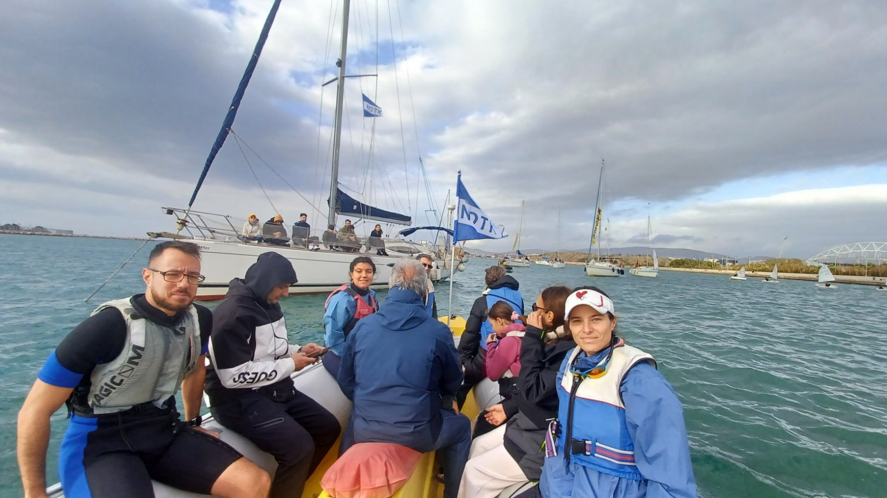
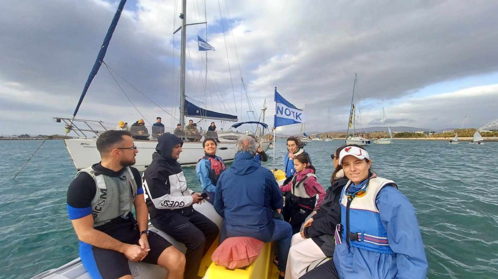

Στιγμιότυπο από τη Γιορτή των Φώτων με το φουσκωτό του Ομίλου εν πλω.
Μαθητές, προπονητές και φίλοι του NOTK μαζί, σε μια ξεχωριστή ημέρα στη θάλασσα.

Εικόνα από τη Γιορτή των Φώτων, με το φουσκωτό του Ομίλου να πλέει στη θάλασσα.
Μαθητές, προπονητές και φίλοι του NOTK μοιράζονται μια ιδιαίτερη στιγμή στο νερό.

Στιγμιότυπο από τη Γιορτή των Φώτων με το φουσκωτό του Ομίλου εν πλω.
Μαθητές, προπονητές και φίλοι του NOTK, όλοι μαζί σε μια ξεχωριστή ημέρα στη θάλασσα.